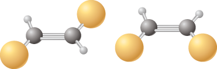
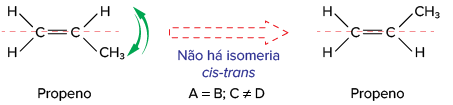
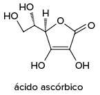
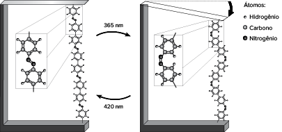

Entre os fármacos à venda nas farmácias do nosso país, existem alguns que apresentam uma particularidade em sua estrutura, que é de fundamental importância para a atividade biológica.
Alguns desses fármacos são quirais ou têm quiralidade, ou seja, têm em sua estrutura um ou mais átomos (na maioria das vezes carbono) que têm a sua orientação tridimensional muito bem definida. A modificação dessa orientação pode
levar à diminuição do efeito biológico, à sua total supressão ou ao aparecimento de um efeito biológico adverso.
Convém deixar claro que a quiralidade não é condição para que uma substância apresente efeito farmacológico, entretanto se a estrutura tiver um centro quiral é importante saber qual a orientação espacial responsável pela atividade.
[...]
Por exemplo, a talidomida é um sedativo leve e pode ser utilizado no tratamento de náuseas, muito comum no período inicial da gravidez. Quando foi lançado era considerado seguro para o uso de grávidas, sendo administrado como uma
mistura racêmica, ou seja, uma mistura composta pelos seus dois enantiômeros, em partes iguais.
Entretanto, uma coisa que não se sabia na época é que o enantiômero S [...] levava à má-formação congênita, afetando principalmente o desenvolvimento normal dos braços e pernas do bebê. O uso indiscriminado desse fármaco levou
ao nascimento de milhares de pessoas com gravíssimos defeitos físicos [...].
COELHO, Fernando A. S. “Fármacos e quiralidade”.
Cadernos Temáticos de Química Nova na escola . [s.
L .], n. 3, maio 2001. Disponível em: <http://qnesc.sbq.org.br/online/cadernos/03/quiral.pdf>. Acesso em: 2 set. 2021.
Qual é a importância de lermos as bulas de remédios?
A assimetria de uma molécula será um critério determinante neste capítulo. Antes de pensarmos nas moléculas, você conseguiria mencionar dois objetos classificados como assimétricos?
Neste capítulo serão abordadas as habilidades
EM13CNT201
,
EM13CNT304
e
EM13CNT307
.
O conceito de isomeria espacial
Compostos nos quais os átomos estão ligados em uma mesma ordem, porém com arranjos tridimensionais no espaço diferentes, são denominados isômeros espaciais ou estereoisômeros.
Diferentemente do que ocorria com os isômeros constitucionais, os isômeros espaciais não são distinguidos apenas ao se observar suas propriedades macroscópicas à temperatura ambiente.
Os isômeros espaciais são classificados em
isômeros geométricos e
isômeros ópticos .
Isomeria geométrica ou cis-trans
Esse tipo de isomeria ocorre em cadeias abertas e em cadeiasfechadas.
Para cadeias abertas
Quando analisamos as ligações simples, como C — C, não existe uma restrição quanto à rotação no eixo da ligação. No entanto, para ligações duplas, como C = C, a rotação no eixo da ligação é impedida, uma vez que é necessário o
rompimento de uma ligação p, o que requer altas temperaturas.
Como analogia, imagine duas tábuas presas por um prego. Existe a possibilidade de girá-las livremente ao redor do prego. Agora imagine que dois pregos atravessam as tábuas. O movimento não ocorre.
Observe as fórmulas estruturais abaixo: elas representam estruturas distintas (isômeros) ou apenas duas representações diferentes para a mesma molécula?
Você acertou caso tenha respondido que são duas representações diferentes para a mesma molécula. Isso ocorre pois o eixo formado pela ligação C — C apresenta rotação livre. Veja:
Assim, os dois átomos de bromo podem estar representados na figura no mesmo lado do eixo da ligação ou em lados opostos; ou seja, todas as representações são equivalentes.
O mesmo ocorre para as fórmulas estruturais apresentadas abaixo?
Você acertou caso tenha respondido não. Nesse caso, temos uma ligação C = C que impede a rotação livre – os dois lados da molécula devem girar juntos. Para que haja rotação é necessário que a ligação dupla seja rompida, o que requer
o fornecimento de 270 kJ/mol de energia. Veja:

Assim, cada uma das estruturas representa uma substância diferente, mas com as mesmas fórmulas moleculares; nesse caso, temos um par de isômeros geométricos chamados de
isômeroscis-trans .
Traçando uma linha imaginária acompanhando a ligação C = C (neste exemplo, na horizontal) que irá cortar a molécula em duas partes, quando os
ligantes
iguais estão do mesmo lado em relação à linha imaginária, teremos o
isômerocis (do latim , que significa “mesmo lado”, “próximo a”); quando os ligantes iguais estiverem de lados opostos, teremos o
isômerotrans (do latim , que significa “lados diferentes”, “através de”). Sua nomenclatura é a mesma estudada até o momento, acrescentando apenas o termo
cis ou
trans antes do nome da molécula.
Os ligantes de cada carbono devem ser diferentes entre si, pois, caso sejam iguais, não teremos isômeros, mas sim a mesma molécula. Esquematicamente, teremos:
Observe os compostos abaixo:

Quando temos alcenos com mais de dois ligantes diferentes, não é recomendado utilizar o sistema de nomenclatura “
cis-trans ”, pois ele pode trazer ambiguidades. Veja o exemplo a seguir, com três ligantes diferentes (flúor, cloro e bromo):
A molécula apresenta isômeros geométricos, uma vez que os ligantes de cada carbono são diferentes entre si; porém, eles não serão identificados por meio da nomenclatura “
cis-trans ”. Nesses casos, utilizaremos o sistema de nomenclatura
Z-E , sendo
Z (do alemão
zusammen 5 juntos) a atribuição dada quando os ligantes de maior número atômico (Z) para cada um dos átomos de carbono da ligação dupla estiverem do mesmo lado da linha imaginária e
E (do alemão
entgegen 5 opostos) a atribuição dada quando os ligantes de maior número atômico (Z) para cada um dos átomos de carbono da ligação dupla estiverem de lados contrários da linha imaginária. Esquematicamente, teremos:
Retomando a cadeia anterior, teremos:
Para cadeias fechadas
Verificamos a presença de isômeros
cis-trans em cadeias fechadas quando:
não há ligação dupla no ciclo, pois, tendo a ligação dupla, haveria apenas um ligante para cada carbono que realiza a ligação dupla;
dois átomos de carbono do ciclo (sendo estes vizinhos ou não) devem apresentar ligantes diferentes entre si, pois assim como no caso da ligação C = C, a rotação em torno do eixo da ligação entre os átomos de carbono não é possível
devido à estrutura cíclica.
Caso os dois átomos ligados diretamente ao carbono da ligação dupla forem os mesmos, analisaremos o próximo átomo; caso esse também seja igual, analisaremos o próximo, um de cada vez, até que seja encontrada uma diferença. Esta regra é chamada de
regra do primeiro ponto de diferença .
Veja:
Veja o exemplo:
A acetilcolina (abreviada como ACh) é encontrada no sistema nervoso do corpo humano e possui um importante papel na transmissão de impulsos nervosos. [...]
A ACh dispara os impulsos nervosos ao se ligar a dois tipos diferentes de receptores conhecidos como
receptor muscarínico e receptor nicotínico . Ao se ligarem com a ACh, os receptores muscarínico e nicotínico exercem efeitos biológicos diferentes no organismo. Principalmente, o ritmo cardíaco aumenta
ou diminui dependendo se a ACh se liga aos receptores muscarínico ou nicotínico. Mas como a ACh pode se ligar a dois receptores que têm formas diferentes?
A resposta reside na habilidade da ACh em adotar diferentes conformações pela rotação em torno da ligação C – C central [...]. As posições relativas do íon amônio quaternário e éster modifica a rotação da ligação
C – C, e isso é importante porque esses grupos formam ligações não covalentes com os receptores muscarínico e nicotínico. [...]
Mas qual é a conformação da ACh que se liga ao receptor muscarínico e qual é aquela que se liga ao receptor nicotínico? Para responder a essa questão, os bioquímicos prepararam em laboratório análogos conformacionalmente
rígidos da ACh. Essas moléculas têm os mesmos grupos funcionais da ACh, ou grupos semelhantes, mas que só podem adotar uma única conformação, pois a ligação central C – C é parte de um anel. [...]
Por exemplo, nos derivados do
cis- e do
trans -ciclopropano, representados a seguir, um grupo CH2 se liga à ligação C – C na ACh, e isso impede a rotação da ligação. [...] Embora menos potentedo que a ACh, o trans-ciclopropano produz o mesmo
tipo de resposta que a ACh,enquanto o
cis -ciclopropano é essencialmente inativo. [...]
BURROWS, Andrews
et al. Química³: introdução à Química Inorgânica, Orgânica e Físico-Química . SILVA, Edilson Clemente da (Trad.). Rio de Janeiro: LTC, 2012. v. 2. p. 52-3.
Isomeria óptica
A isomeria óptica ocorre com
moléculas assimétricas , nas quais os isômeros diferem no desvio da luz polarizada.
Primeiramente, vamos analisar alguns exemplos de objetos simétricos e assimétricos para depois pensarmos nesses conceitos relacionados às moléculas orgânicas. Analise as figuras abaixo:
Os
objetos simétricos apresentam pelo menos um plano de simetria: sua imagem no espelho será igual a ele (
objeto e imagem são iguais, ou seja, são sobreponíveis ). Já os
objetos assimétricos não apresentam plano de simetria: sua imagem no espelho será diferente do objeto (
objeto e imagem não são iguais, ou seja, não são sobreponíveis ).
A isomeria óptica está associada ao comportamento das substâncias assimétricas quando submetidas a um feixe de luz polarizada (que tem um só plano de vibração, como o
laser ). A luz polarizada é um tipo de luz obtida quando a luz natural, não polarizada (infinitos planos de vibração, como a luz do sol ou de uma lâmpada) atravessa um polarizador.
...A luz é uma onda eletromagnética que provém de oscilações elétricas e oscilações magnéticas, podendo se propagar em meios materiais e no vácuo.
Observe que a luz comum se propaga com seus componentes verticais e horizontais até atingir o filtro polarizador vertical, pelo qual passam somente ondas luminosas na posição vertical.
Esse fenômeno também acontece com moléculas; logo, existem moléculas simétricas e assimétricas. Quando uma molécula é simétrica, sua imagem no espelho é igual a ela (são sobreponíveis); já quando a molécula é assimétrica, sua imagem
no espelho é diferente dela (não são sobreponíveis). Veja:
Dizemos que as moléculas assimétricas apresentam isomeria óptica, uma vez que têm a mesma fórmula molecular e diferentes organização dos átomos no espaço, o que resulta em características diferentes.
Um exemplo de composto orgânico que apresenta isomeria óptica é o ácido lático (com nome IUPAC ácido 2-hidroxipropanoico): um de seus isômeros é responsável pela fadiga muscular; o outro, pelo azedamento do leite.
Carbono assimétrico ou quiral
Existe uma técnica que auxilia na identificação de uma molécula assimétrica: a existência de pelo menos um
carbono assimétrico ou quiral (do grego
cheiral 5 mão) em sua estrutura. O carbono quiral é um carbono saturado que apresenta os quatro ligantes diferentes entre si.
Ao longo do estudo de isomeria óptica, alguns termos importantes serão utilizados. Veja alguns deles e seus significados:
Antípodas ópticos : isômeros ópticos.
Enantiômeros : do grego
enantio 5 oposto;
mero 5 parte.
Enantiomorfos: do grego
morphos 5 forma; são isômeros ópticos que têm entre si a relação de objeto-imagem.
Estereoisômeros: do grego
stereo 5 três dimensões no espaço; são isômeros assimétricos (não sobreponíveis).
Diasteroisômeros : são estereoisômeros com mais de um centro de quiralidade que não são imagens especulares; são simétricos (superponíveis).
Mistura racêmica : opticamente inativa, ocorre quando misturamos enantiômeros em partes iguais.
Vamos analisar novamente o ácido lático:
Podemos observar que todos os ligantes do carbono central são diferentes entre si; logo, existe um carbono assimétrico na molécula do ácido lático, comumente identificado por um asterisco. Moléculas com carbono quiral apresentam um
estereoisômero que corresponde à sua imagem especular. Veja a comparação com as mãos de uma pessoa:
Objeto e imagem de moléculas assimétricas têm comportamento diferente quando expostos à luz plano-polarizada. Quando em solução aquosa, um isômero desvia a luz para a direita e o outro, para a esquerda; por isso, são consideradas
substâncias opticamente ativas. O ângulo de desvio da luz polarizada pode ser medido com o auxílio de um polarímetro. Veja:
Uma luz não polarizada é emitida por uma lâmpada de sódio e passa pelo polarizador. O feixe plano-polarizado entra no tubo que contém uma solução da substância opticamente ativa, que desvia o plano da luz para a direita ou para
a esquerda. Um analisador (nome dado a um segundo polarizador) com escala de rotação em graus é girado, fazendo com que a luz volte a passar, permitindo que o observador determine o ângulo de desvio.
Quando o desvio da luz plano-polarizada for para a direita (sentido horário), o isômero será chamado
dextrogiro (do latim
dexter 5 direita); utilizamos o
símbolod ou 1 antes do nome do isômero para identificá-lo. Quando o desvio da luz plano-polarizada for para a esquerda (sentido anti-horário), o isômero será chamado
levogiro (do latim
laevus 5 esquerda); utilizamos o
símbolo L ou – antes do nome do isômero para identificá-lo.
Os isômeros
d e ℓ também podem ser representados por
R e
S , respectivamente, uma forma de nomenclatura alternativa. Do latim,
rectus = direita e
sinister = esquerda.
Os enantiômeros giram o plano de luz de um mesmo valor, mas em sentidos opostos. Assim, misturas que apresentam quantidade equimolares de um par de enantiômeros são opticamente inativas, sendo chamadas de
misturas racêmicas , do latim
racemus , que significa cacho de uva.
O cientista que observou essa mudança de ângulo de desvio dos isômeros pela primeira vez foi o químico francês Louis Pasteur (1822-1895).
Questão resolvida
1
Unesp 2019 A vitamina D3 é lipossolúvel e opticamente ativa. Certo laboratório produz e comercializa suplementos dessa vitamina na forma de cápsulas contendo diferentes quantidades de colecalciferol. Essas quantidades
são comumente indicadas por Unidades Internacionais (U.I.) de vitamina D3, que têm sua equivalência em unidades de massa. A tabela foi construída com base em informações da bula desse suplemento, que deve ser usado
somente com indicação de profissional de saúde.
A partir dos dados da tabela, calcule quanto vale cada U.I. de vitamina D3, em mg de colecalciferol. Indique, na fórmula do colecalciferol reproduzida abaixo, um átomo de carbono quiral responsável pela atividade óptica
observada na molécula.
Qual é a função orgânica oxigenada presente na estrutura da vitamina D3? Justifique, com base na estrutura molecular do colecalciferol, por que essa vitamina é lipossolúvel.
Resolução:
Cálculo de quanto vale cada U.I. de vitamina D3 em mg de colecalciferol:
Indicação de um átomo de carbono quiral responsável pela atividade óptica observada na molécula (pode-se escolher um entre os cinco marcados com um círculo na figura a seguir):
A função orgânica oxigenada presente na estrutura da vitamina D3 (colecalciferol) é a função álcool. A vitamina é classificada como lipossolúvel, pois sua estrutura é predominantemente apolar (mistura de hidrocarbonetos).
Moléculas com mais de um carbono quiral e isômeros opticamente ativos
Considere como exemplo o composto 2-cloro-3-iodobutano, cuja fórmula estrutural está representada abaixo:
Os carbonos 2 e 3 são quirais, sendo possível prever a existência de quatro isômeros ópticos representados pela
projeção de Fischer
abaixo:
Comparando a molécula I com a molécula III, podemos observar que foram trocadas as posições de dois ligantes (hidrogênio e cloro), e a mudança gerou isômeros ópticos uns dos outros, mas nem todos são enantiômeros (relação objeto-imagem). Assim, os pares
I/II e III/IV são enantiômeros ou
enantiomorfos , enquanto os pares I/III, I/IV, II/III e II/IV são
diasteroisômeros (não há relação objeto-imagem). Então, temos quatro
isômeros ópticos, sendo dois dextrogiros e dois levogiros, e duas misturas racêmicas. O número de misturas racêmicas será sempre a metade do número de isômeros ópticos.
Para calcularmos a quantidade de isômeros ópticos (diasteroisômeros e enantiômeros) e de misturas racêmicas para um composto, devemos primeiramente verificar a quantidade de carbonos quirais (representada por “n”) presentes na
molécula; em seguida, devemos aplicar as fórmulas propostas por Van’t Hoff:
Existe um caso especial de isomeria óptica quando os carbonos quirais apresentam ligantes iguais. Observe a molécula do ácido tartárico (ácido 2,3-di-hidroxibutanodioico):
Note que os carbonos 2 e 3 são quirais (os quatro ligantes são diferentes entre si), mas seus substituintes são iguais; logo, terão o mesmo ângulo de desvio. Em casos como esse, não podemos usar a fórmula proposta por Van’t Hoff, pois um dos isômeros
espaciais será inativo em razão de uma compensação interna (um carbono quiral irá compensar o desvio do outro). O ácido tartárico apresenta apenas um isômero dextrogiro, um levogiro e um tipo de isômero inativo (que não desvia
o plano de luz polarizada) chamado
isômero meso .
Propriedades biológicas dos enantiômeros
Os enantiômeros têm propriedades físicas e químicas idênticas, mas apresentam propriedade biológicas distintas. Isso ocorre pois nosso organismo é extremamente seletivo: nele acontecem diversas reações químicas; quando ingerimos
um alimento, uma bebida ou ainda um medicamento, essas reações podem sofrer alterações. Fazendo uma analogia simplista, assim como uma luva direita se ajusta na mão direita, mas não se ajusta na mão esquerda, quando substâncias
assimétricas são ingeridas, elas podem ou não interagir com substâncias do nosso organismo. Observa-se também que um dos isômeros ópticos pode ter a reação mais acelerada enquanto o outro pode nem mesmo reagir – ou, ainda,
um isômero pode ter efeito terapêutico enquanto o outro pode ser tóxico.
Alusão a interação do fármaco quiral com o nosso corpo.
Um exemplo famoso é o medicamento talidomida. Lançada no final dos anos 1950 como um sedativo considerado seguro, a talidomida foi prescrita para mulheres grávidas no intuito de combater enjoos matinais e insônia. Descobriu-se
posteriormente que o medicamento causava malformações nos bebês.
A talidomida era vendida como uma mistura racêmica dos enantiômeros, e não se conheciam até então os diferentes efeitos causados no organismo. A tragédia levou a mudanças na legislação sobre testes de medicamentos: todas as formas
quirais de um medicamento devem ser testadas rigorosamente antes da aprovação.
Aplicando conhecimentos
1
s compostos but-1-eno e but-2-eno apresentam isomeria
cis-trans ? Justifique.
2
Diferencie o(s) composto(s) que apresenta(m) isomeria
cis-trans do exercício 1 quanto à polaridade e à temperatura de ebulição.
3
Para o 1,2-dimetilciclopentano, escreva seus isômeros
cis-trans .
4
O que é um carbono assimétrico?
5
Qual é o número de carbonos assimétricos (quirais) no composto a seguir?
6
Qual é o número de isômeros opticamente ativos para o composto 3-metil-hexano?
7
Enem A talidomida é um sedativo leve e foi muito utilizado no tratamento de náuseas, comuns no início da gravidez. Quando foi lançada, era considerada segura para o uso de grávidas, sendo administrada como uma mistura
racêmica composta pelos seus dois enantiômeros (R e S). Entretanto, não se sabia, na época, que o enantiômero S leva à malformação congênita, afetando principalmente o desenvolvimento normal dos braços e pernas do bebê.
COELHO, F. A. S. “Fármacos e quiralidade”.
Cadernos Temáticos de Química Nova na Escola ,São Paulo, n. 3, maio 2001 (adaptado).
Essa malformação congênita ocorre porque esses enantiômeros:
reagem entre si.
não podem ser separados.
não estão presentes em partes iguais.
interagem de maneira distinta com o organismo.
são estruturas com diferentes grupos funcionais.
Consolidando saberes
1
UFRGS 2018 Considere a representação tridimensional da molécula orgânica mostrada abaixo.
Sobre essa molécula, é correto afirmar que:
é um hidrocarboneto saturado de cadeia homogênea e ramificada.
possui todos os átomos de carbono com geometria trigonal plana.
tem, na nomenclatura oficial IUPAC, o nome 2-metilbut-1-eno.
apresenta isomeria geométrica.
possui fórmula molecular C5H12.
2
Uerj 2019 Observe a seguir as fórmulas estruturais espaciais dos principais compostos do óleo de citronela, produto empregado como repelente de mosquitos.
Considerando essas fórmulas estruturais, a quantidade de compostos que apresentam isômeros espaciais geométricos é igual a:
1
2
3
4
3
Unesp 2018 Examine as estruturas do ortocresol e do álcool benzílico.
O ortocresol e o álcool benzílico:
apresentam a mesma função orgânica.
são isômeros.
são compostos alifáticos.
apresentam heteroátomo.
apresentam carbono quiral.
4
UFSM-RS Cientistas brasileiros definem como transgênico um "organismo cujo genoma foi alterado pela introdução de DNA exógeno, que pode ser derivado de outros indivíduos da mesma espécie, de uma espécie completamente
diferente ou até mesmo de uma construção gênica sintética". A tecnologia de produção de alimentos transgênicos começou com o desenvolvimento de técnicas de engenharia genética que visavam a um melhoramento genético
que pudesse promover a resistência de vegetais a doenças e insetos, sua adaptação aos estresses ambientais e melhoria da qualidade nutricional. Porém, a busca por maior produtividade e maior variabilidade levou ao desenvolvimento
da clonagem de genes. Essa técnica tornou possível isolar um gene de um organismo e introduzi-lo em outro como, por exemplo, uma planta que, ao expressar esse gene, manifestará a característica que ele determina.
Uma das bases constituintes do DNA é a citosina.
No processo químico mostrado acima, a substância A é um ________________ da citosina.
O termo que preenche, corretamente, a lacuna é o:
metâmero.
isômero de posição.
enantiômero.
isômero geométrico.
tautômero.
5
PUC-SP 2016 O eugenol e o anetol são substâncias aromáticas presentes em óleos essenciais, com aplicações nas indústrias de cosméticos e farmacêutica. O eugenol está presente principalmente nos óleos de cravo, canela
e sassafrás, já o anetol é encontrado nos óleos essenciais de anis e anis-estrelado.
Sobre esses compostos foram feitas as seguintes afirmações.
Ambos apresentam isomeria geométrica.
O eugenol apresenta funções fenol e éter, enquanto que o anetol apresenta função éter.
A fórmula molecular do eugenol é C10H12O2, enquanto que o anetol apresenta fórmula molecular C10H12O.
O anetol apresenta temperatura de ebulição maior do que o eugenol.
Estão corretas
APENAS as afirmações:
I e II.
I e IV.
II e III.
III e IV.
6
UEPG-PR SSA 2021 Sobre o ácido lático (ácido 2-hidroxipropanoico), assinale o que for correto.
01.
Existe a forma levorrotatória e dextrorrotatória para esse composto.
02.
Sua fórmula molecular é C3H6O3.
04.
O isômero D-ácido é oticamente ativo.
08.
A mistura racêmica de seus isômeros, D e L, é oticamente inativa.
Soma:
7
Uerj 2017 O ácido linoleico, essencial à dieta humana, apresenta a seguinte fórmula estrutural espacial:
Como é possível observar, as ligações duplas presentes nos átomos de carbono 9 e 12 afetam o formato espacial da molécula.
As conformações espaciais nessas ligações duplas são denominadas, respectivamente:
cis e cis .
cis e trans .
trans e cis .
trans e trans .
8
FMJ-SP 2021 Uma pesquisa desenvolvida pelo Instituto de Química da Universidade de São Paulo está utilizando o ácido betalâmico, um derivado da betanina, corante extraído da beterraba, para produzir um pigmento de cor
azul chamado BeetBlue. A figura apresenta a fórmula estrutural do ácido betalâmico e o corante BeetBlue.
Cite o nome das funções oxigenadas existentes em uma molécula de ácido betalâmico.
Assinale, na estrutura existente, o carbono assimétrico presente na molécula do ácido betalâmico. Escreva a fórmula estrutural do isômero geométrico do ácido betalâmico.
9
UFRGS 2017 O Prêmio Nobel de Química de 2016 foi concedido aos cientistas Jean-Pierre Sauvage, Sir J. Fraser Stoddart e Bernard L. Feringa que desenvolveram máquinas moleculares. Essas moléculas, em função de estímulos
externos, realizam movimentos controlados que poderão levar, no futuro, à execução de tarefas de uma máquina na escala nanométrica (10–9 m).Abaixo está mostrada uma molécula na qual, pela irradiação de luz (fotoestimulação),
o isômero A é convertido no isômero B. Sob aquecimento (termo-estimulação), o isômero B novamente se converte no isômero A.
A respeito disso, considere as seguintes afirmações
A e B são isômeros geométricos em que os substituintes na ligação N 5 N estão em lados opostos no isômero A e, no mesmo lado, no isômero B.
A interação do grupo –1NH3 com o heterociclo, no isômero B, é do tipo ligação de hidrogênio.
Todos os nitrogênios presentes nos dois isômeros apresentam uma estrutura tetraédrica.
Quais estão corretas?
Apenas I.
Apenas III.
Apenas I e II.
Apenas II e III.
I, II e III.
10
UEMG 2017 Observe o composto orgânico abaixo e as afirmações a seu respeito.
É um álcool insaturado.
É um isômero
cis-trans .
Apresenta 18 hidrogênios.
Apresenta 3 ramificações.
O número de afirmação(ões) correta(s) é igual a:
1
2
3
4
11
Unifesp 2017 Considere a fórmula estrutural do anestésico geral halotano (massa molar aproximada 200 g/mol).
Escreva a fórmula molecular do halotano e calcule a porcentagem em massa de flúor nesse anestésico. Apresente os cálculos.
O halotano deve apresentar isomeria geométrica (
cis-trans )? E isomeria óptica? Justifique suas respostas.
12
Famema-SP 2017 A fórmula representa a estrutura da leucina, um dos aminoácidos formadores de proteínas no organismo humano.
Dê o número de átomos de carbono e de hidrogênio presentes em cada molécula de leucina.
Na fórmula da leucina, indique o átomo de carbono assimétrico e o átomo de carbono terciário.
13
Uerj 2018 A dopamina e a adrenalina são neurotransmissores que, apesar da semelhança em sua composição química, geram sensações diferentes nos seres humanos. Observe as informações da tabela:
Indique a função química que difere a dopamina da adrenalina e nomeie a sensação gerada pelo neurotransmissor que apresenta menor massa molecular.Identifique, ainda, o neurotransmissor com isomeria óptica e escreva sua fórmula
molecular.
Dados: C = 12; H = 1; O = 16.
No enem é assim
As questões selecionadas nesta seção são prioritariamente do Enem, mas questões de vestibulares diversos que apresentam características semelhantes aos itens do referido exame também foram usadas como recurso para estudo.
1
Enem 2018 As abelhas utilizam a sinalização química para distinguir a abelha-rainha de uma operária, sendo capazes de reconhecer diferenças entre moléculas. A rainha produz o sinalizador químico conhecido como ácido
9-hidroxidec-2-enoico, enquanto as abelhas-operárias produzem ácido 10-hidroxidec-2-enoico. Nós podemos distinguir as abelhas-operárias e rainhas por sua aparência, mas, entre si, elas usam essa sinalização química para
perceber a diferença. Pode-se dizer que veem por meio da química.
LE COUTEUR, P.; BURRESON, J.
Os botões de Napoleão: as 17 moléculas que mudaram a história. Rio de Janeiro: Jorge Zahar, 2006 (adaptado).
As moléculas dos sinalizadores químicos produzidas pelas abelhas-rainhas e operária possuem diferença na:
fórmula estrutural.
fórmula molecular.
identificação dos tipos de ligação.
contagem do número de carbonos.
identificação dos grupos funcionais.
2
Unesp 2021 Certa vitamina apresenta as seguintes características:/p>
hidrossolubilidade;
insaturação entre átomos de carbono;
presença da função álcool;
presença de átomo de carbono quiral.
Essa vitamina é:

3
Mackenzie-SP 2018 O butanoato de metila é um flavorizante de frutas utilizado na indústria alimentícia. A sua fórmula estrutural está representada abaixo.
Analise a fórmula do butanoato de metila e assinale a alternativa que traz, respectivamente, um isômero de compensação e um de função desse flavorizante.
4
UFJF-MG 2020 As fórmulas moleculares descrevem precisamente a composição química de um composto puro em função do tipo e número de átomos presentes. Apesar disto, diferenças na conectividade entre os átomos da molécula
podem resultar em diversos isômeros funcionais. Considere a fórmula molecular C3H6O e desenhe as fórmulas estruturais de:
uma cetona, um aldeído, dois éteres e um álcool secundário cíclico. Inclua todos os átomos e ligações nos desenhos.
5
Enem 2018 Pesquisas demonstram que nanodispositivos baseados em movimentos de dimensões atômicas, induzidos por luz, poderão ter aplicações em tecnologias futuras, substituindo micromotores, sem a necessidade de componentes
mecânicos. Exemplo de movimento molecular induzido pela luz pode ser observado pela flexão de uma lâmina delgada de silício, ligado a um polímero de azobenzeno e a um material suporte, em dois comprimentos de onda, conforme
ilustrado na figura. Com a aplicação de luz ocorrem reações reversíveis da cadeia do polímero, que promovem o movimento observado.

TOMA, H. E. A nanotecnologia das moléculas.
Química Nova na Escola , n. 21, maio 2005 (adaptado).
O fenômeno de movimento molecular, promovido pela incidência de luz, decorre do(a):
movimento vibracional dos átomos, que leva ao encurtamento e à relaxação das ligações.
isomerização das ligações N 5 N, sendo a forma cis do polímero mais compacta que a
trans .
tautomerização das unidades monoméricas do polímero, que leva a um composto mais compacto.
ressonância entre os elétrons p do grupo azo e os do anel aromático que encurta as ligações duplas.
variação conformacional das ligações N 5 N, que resulta em estruturas com diferentes áreas de superfície.
6
Uerj 2020 Em uma unidade industrial, emprega-se uma mistura líquida formada por solventes orgânicos que apresentam a fórmula molecular C2H6O.
Entre os componentes da mistura, ocorre isomeria plana do seguinte tipo:
cadeia.
função.
posição.
compensação.
7
Enem PPL 2017 Em algumas regiões brasileiras, é comum se encontrar um animal com odor característico, o zorrilho. Esse odor serve para proteção desse animal, afastando seus predadores. Um dos feromônios responsáveis
por esse odor é uma substância que apresenta isomeria trans e um grupo tiol ligado à sua cadeia.
A estrutura desse feromônio, que ajuda na proteção do zorrilho, é:
8
Enem PPL 2016 A busca por substâncias capazes de minimizar a ação do inseto que ataca as plantações de tomate no Brasil levou à síntese e ao emprego de um feromônio sexual com a seguinte fórmula estrutural:
Uma indústria agroquímica necessita sintetizar um derivado com maior eficácia. Para tanto, o potencial substituto deverá preservar as seguintes propriedades estruturais do feromônio sexual: função orgânica, cadeia normal e isomeria
geométrica original.
A fórmula estrutural do substituto adequado ao feromônio sexual obtido industrialmente é: